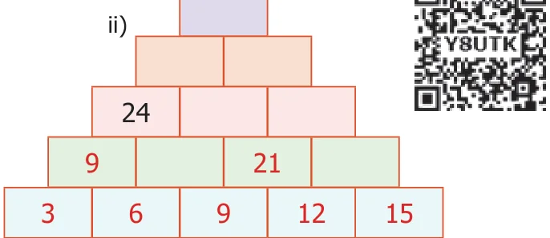
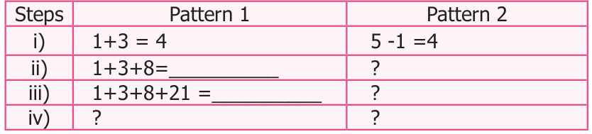
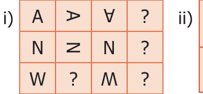
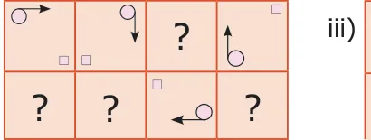
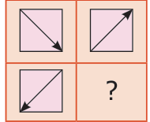
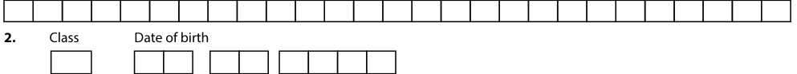
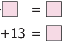
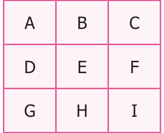

- Study and complete the following pattern

- \(1 \times 1 = 1\)
\(11 \times 11 = 121\)
\(111 \times 111 = 12321\)
\(1111 \times 1111 =\) ?
\(11111 \times 11111 =\) ?
(Hint: \(3 + 6 = 9\), \(9 + 12 = 21)\)
- Find next three numbers in the following number patterns.
- 50, 51, 53, 56, 60, … ii) 77, 69, 61, 53,…
- 10, 20, 40, 80, … iv) 2133 , 321444 , 43215555, …
- Consider the Fibonacci sequence 1, 1, 2, 3, 5, 8,13, 21, 34, 55,… Observe and complete the
following table by understanding the number pattern followed. After filling the table discuss the pattern followed in addition and subtraction of the numbers of the sequence.

- Complete the following patterns.



- Find HCF of the following pair of numbers by Euclid's game.
- 25 and 35 ii) 36 and 12 iii) 15 and 29
- Find HCF of 48 and 28. Also find the HCF of 48 and the number obtained by finding their
difference.

- Give instructions to fill in a bank withdrawal form issued in a bank.
- Arrange the name of your classmates alphabetically.
- Follow and execute the instructions given below.
- Write the number 10 in the place common to the three figures
- Write the number 5 in the place common for square and circle only.
- Write the number 7 in the place common for triangle and circle only.
- Write the number 2 in the place common for triangle and square only.
- Write the numbers 12, 14 and 8 only in square, circle and triangle respectively.
- Fill in the following information. Candidate's EMIS No
- Name of the candidate in Capital Letters followed by initial leaving one box blank. (Do not write Miss/Master)

Date Month Year
- Father's name in Capital Letters followed by initial leaving one box blank. (Do not write Mr./Dr./Prof)
- Mother's Name in Capital Letters followed by initial leaving one box blank. (Do not write Mrs./Dr./Prof)
- Sex (Put mark) 6. Area to which candidates resides. (Put mark)
Male Female Rural Urban
Objective Type Questions
- The next term in the sequence 15, 17, 20, 22, 25,... is
- 28 b) 29 c) 27 d) 26
- What will be the 25 letter in the pattern? ABCAABBCCAAABBBCCC,...
- B b) C c) D d) A
- The difference between 6 term and 5 term in the Fibonacci sequence is
- 6 b) 8 c) 5 d) 3
- The 11 term in the Lucas sequence 1, 3, 4, 7, ... is
- 199 b) 76 c) 123 d) 47
- If the HCF of 26 and 54 is 2, then HCF of 54 and 28 is...
- 26 b) 2 c) 54 d) 1
Exercise 5.2
Miscellaneous Practice problems
- Find HCF of 188 and 230 by Euclid's game.
- Write the numbers from 1 to 50. From that find the following.
- The numbers which are neither divisible by 2 nor 7.
- The prime numbers between 25 and 40.
- All square numbers upto 50.
- Complete the following pattern
- \(1+2+3+4 = 10\) ii) \(1+3+5+7 = 16\) iii) AB, DEF, HIJK, , STUVWX
\(2+3+4+5 = 14 +5+7+9 = 24\) iv) 20, 19, 17, , 10, 5

5+7+9+ 7+9+

- Complete the table by using the following instructions.
A: It is the 6 term in the Fibonacci sequence. B: The predecessor of 2. C: LCM of 2 and 3. D: HCF of 6 and 20 E: The reciprocal of 1/5. F: The opposite number of \(- 7\). G: The first composite number. H: Area of a square of side 3 cm. I: The number of lines of symmetry of an equilateral triangle. After completing the table, what do you observe? Discuss.

- Assign the number for English alphabets as 1 for A, 2 for B upto 26 for Z.
Find the meaning of 7 15 15 4 13 15 18 14 9 14 7